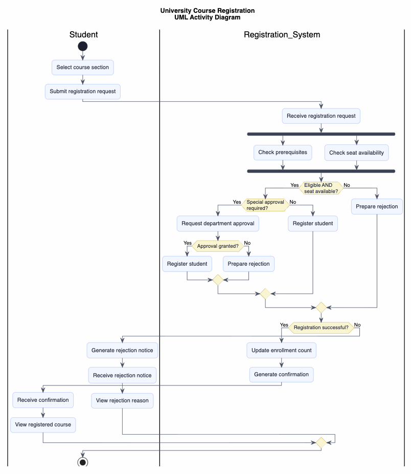
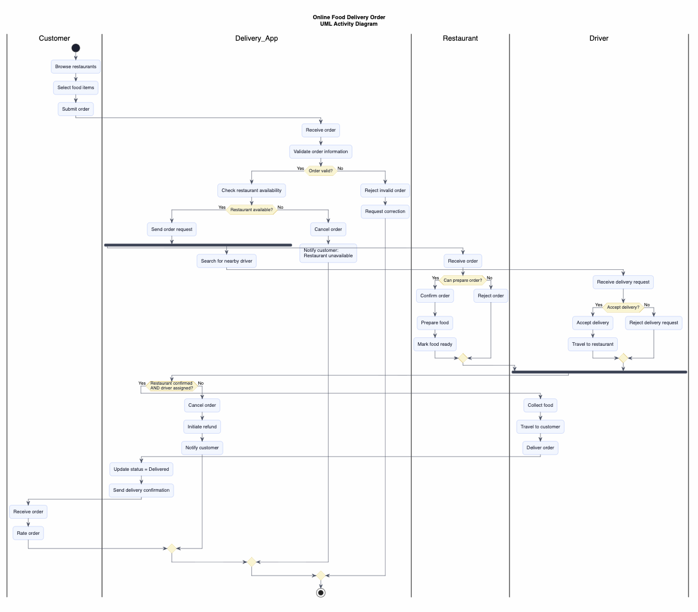
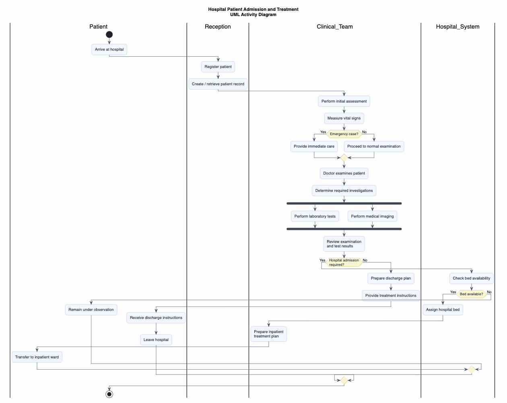

Activity Diagram Practice Studio
Read the operational story, identify decisions and parallel work, assign responsibilities to swimlanes, then build the Activity Diagram before revealing the suggested solution.
Translate realistic process descriptions into UML Activity Diagrams using actions, decisions, guards, fork/join, final outcomes, and swimlanes.
Find the trigger, work and outcomes.
Mark decisions, guards and concurrency.
Place actions in the correct swimlanes.
Do not open the suggested solution first. Your diagram does not need to look identical, but its workflow semantics must be correct.
University Course Registration
A student submits a request to register for a course section. The system must verify that the student has completed the required prerequisites and that the section still has available seats. These two checks may be performed independently. If either check fails, the registration is rejected and the student is informed of the reason. If both checks succeed, the system checks whether special departmental approval is required. If approval is needed, the request is sent to the department for review. If approval is granted, or if no approval is required, the system creates the registration record and sends a confirmation to the student.
Reveal suggested solution

Compare the logic: parallel checks must synchronize before the eligibility decision; approval is conditional; success and rejection lead to distinct student outcomes.
Online Food Delivery Order
A customer places an order using a food-delivery application. The application validates the order and checks whether the restaurant is accepting orders. If the restaurant is unavailable, the order is cancelled and the customer is notified. Otherwise, the restaurant prepares the food while the system searches for an available delivery driver. These activities may proceed in parallel. When the food is ready and a driver has been assigned, the driver collects and delivers the order. If no driver is found within the allowed time, the order is cancelled and the customer receives a refund. After successful delivery, the application asks the customer to rate the order.
Reveal suggested solution

Focus on why restaurant preparation and driver search can run concurrently, and why pickup cannot proceed until the required parallel work is complete.
Hospital Patient Admission and Treatment
A patient arrives at a hospital and registers at reception. A nurse performs an initial assessment and determines whether the case is an emergency. Emergency patients receive immediate care; non-emergency patients proceed through the normal waiting path. A doctor examines the patient and may request laboratory tests and medical imaging, which can be performed in parallel when both are needed. After the required results are available, the doctor reviews the findings and determines the next outcome: discharge, medication/treatment, or hospital admission. If admission is required, bed availability and administrative processing must be handled before transfer to an inpatient ward.
Reveal suggested solution

Check the lifecycle carefully: the patient should not advance to a decision that depends on investigations until the requested work has completed.
Compare your three diagrams
parallel validation + conditional approval
parallel operational work + cancellation
multi-role workflow + clinical branching
The notation is the same, but the process structure changes. That is the real modeling skill.